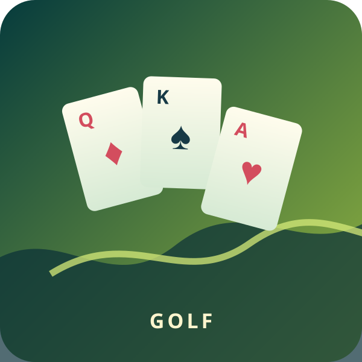

Golf Solitaire
Clear the seven columns by playing a card one rank above or below the waste card.

Clear the seven columns by playing a card one rank above or below the waste card.
Clear all 35 tableau cards.
Plan the longest run.
Hint, Undo, and Restart.
Seven columns hold five face-up cards each. Build one continuous waste pile with a card exactly one rank above or below the current waste card; the stock is a one-way source of fresh cards.
Only the exposed card at the foot of each column can move. Aces and Kings do not wrap in this strict classic version. When no move remains, turn one Stock card.
Look for the longest legal run, keep cards that unlock a column, and avoid using Stock while a tableau route remains.